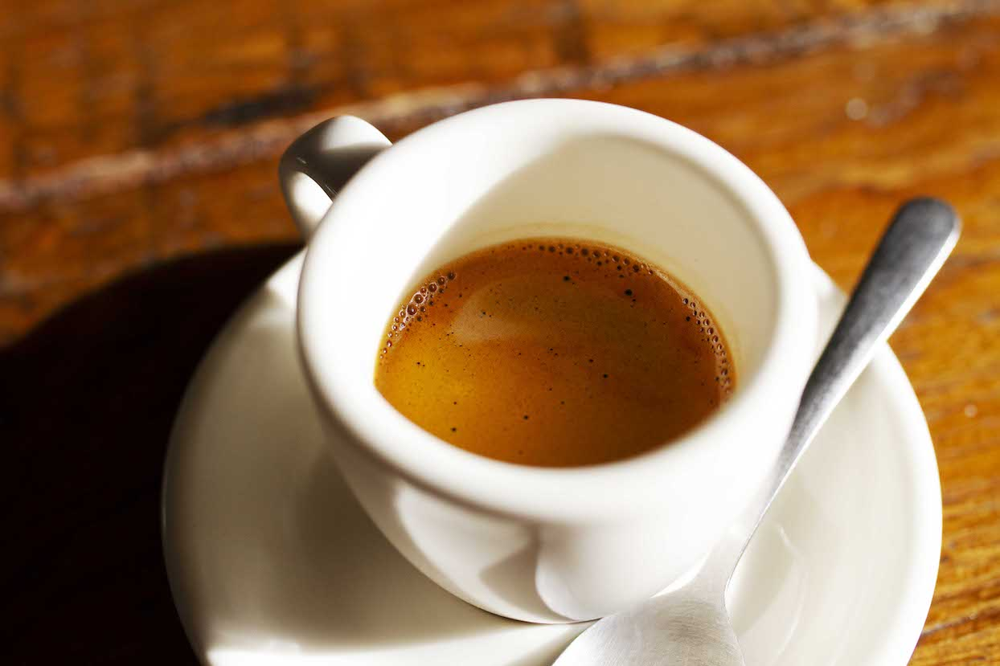
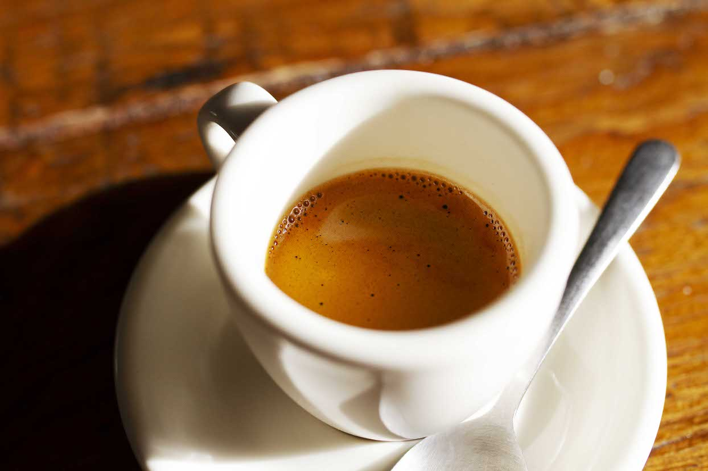
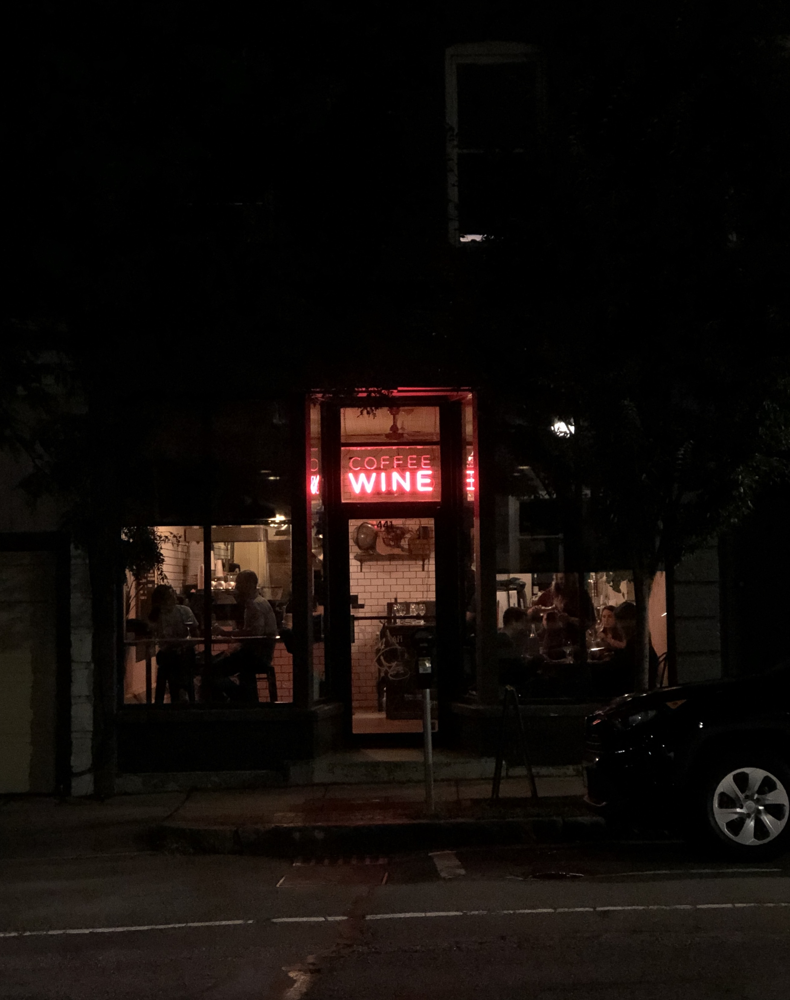
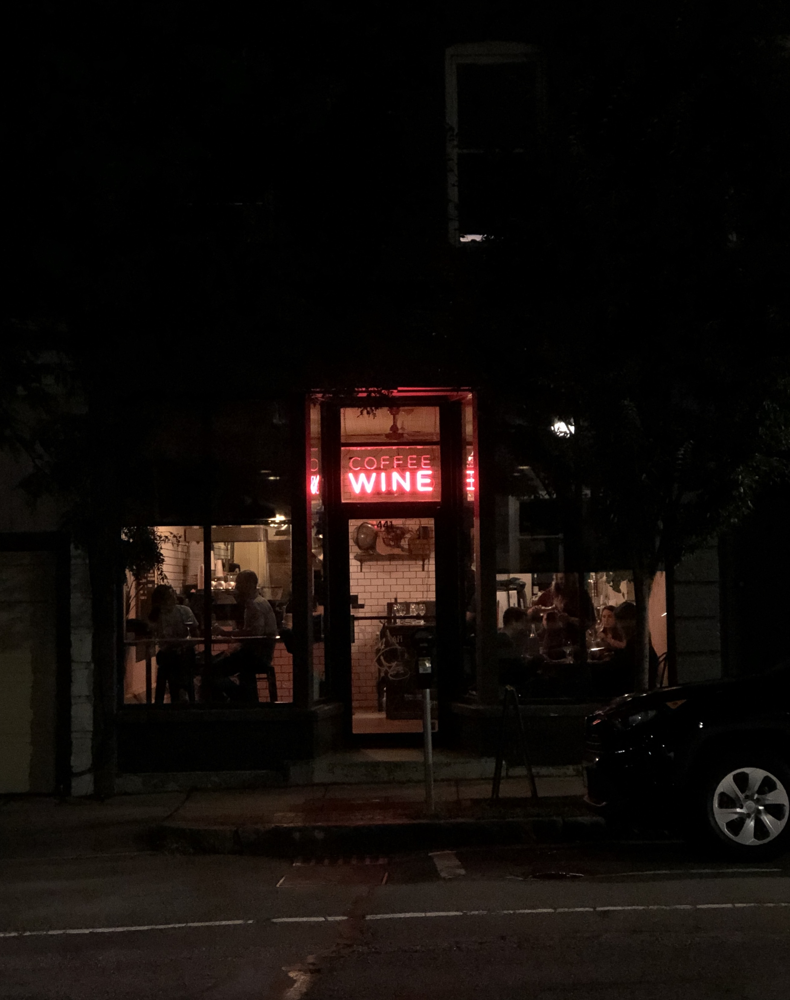

Owners and operators Justin and Rachel Pronovost started Curio Coffee in 2015.
After three and a half years as a coffee shop, in May 2019, Curio added natural wine service for three nights a week.
We’re a family business, and we’re proud to be known for quality, consistency, and service.
Brewing delicious coffee and pulling proper shots of espresso isn’t easy. We believe our commitment to quality and consistency pays off. Sustained by a dedicated following of neighborhood regulars and travelers alike, Curio Coffee has been recognized many times as one of the Boston area’s best coffee shops.
 

We’ve been working with Counter Culture Coffee since we opened, but we also serve coffee from our friends at Broadsheet Coffee in Cambridge. Other quality ingredients like grass-fed milk, handmade vanilla bean syrup, and local, stone ground Taza chocolate round out our drinks program.
We wanted to serve something we made from scratch, but we don’t have a lot of space. That’s where the idea for the Liège, Beligian waffles came in. A waffle iron was relatively small and would allow us to serve a fresh, made-to-order product.
No frozen, defrosted pastries sitting out all day.
Four years and tens of thousands of waffles later, our Liège waffle remains the only food item on our menu.
Although we do sometimes offer seasonal special waffles on the weekends. Sometimes sweet, sometimes savory.
We wanted to share wines we were passionate about with our neighborhood so Curio Coffee started wine service three nights a week in May 2019 and became Curio Coffee & Wine. We offer natural wines by the glass and bottle that showcase the regions, grapes, and chemical-free and low intervention winemaking we love.
 

Currently we are serving natural wine on Thursday, Friday, and Saturday nights along with snacks utilizing quality ingredients from Formaggio Kitchen, Hi-Rise Bread, and other local vendors.
The wine menu rotates weekly but there are some mainstay snacks like the Grilled Cheese, Hot Dogs, Vegan Brats, and Taza Chocolate Pudding.
"Quite possible the best caffeine companion in town"
"18 Essential Boston Area Coffee Shops"
"Best Hot Chocolate Boston"
"Curio Coffee to Transform into Natural Wine Bar at Night"
"Worth Waffles at Curio Coffee in Cambridge"
"Same Space, Different Drink: Meet Curio Wine Bar"
Monday to Friday: 7am-2pm
Saturday & Sunday: 8am-3pm
Thursday to Saturday: 5pm-10pm
441 Cambridge St.
Cambridge, MA 02141